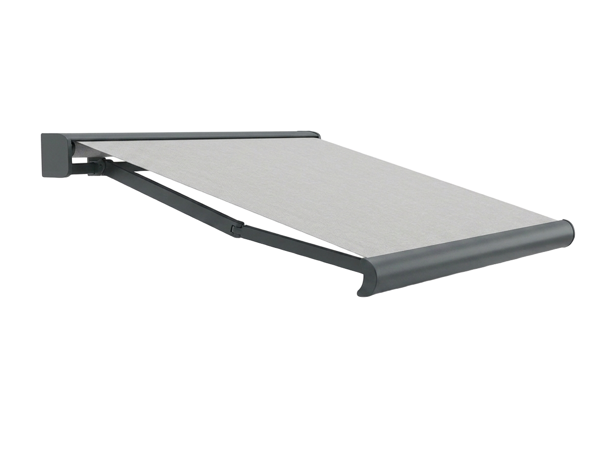
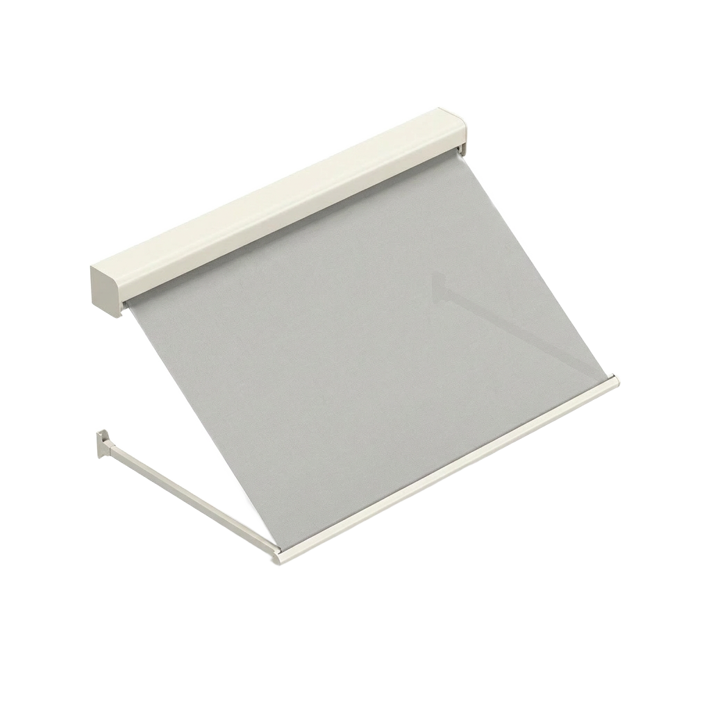
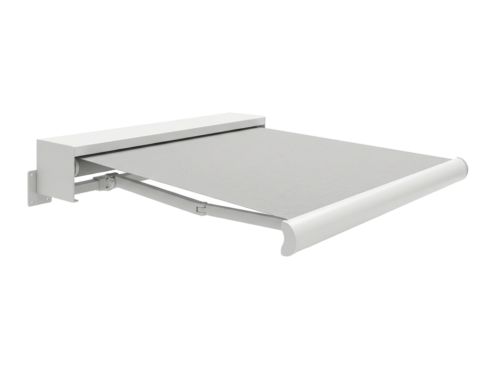
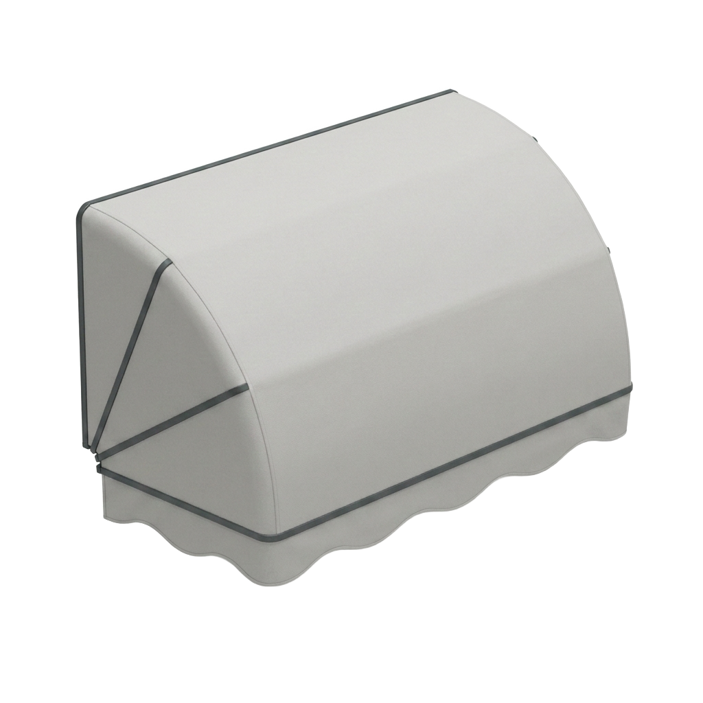
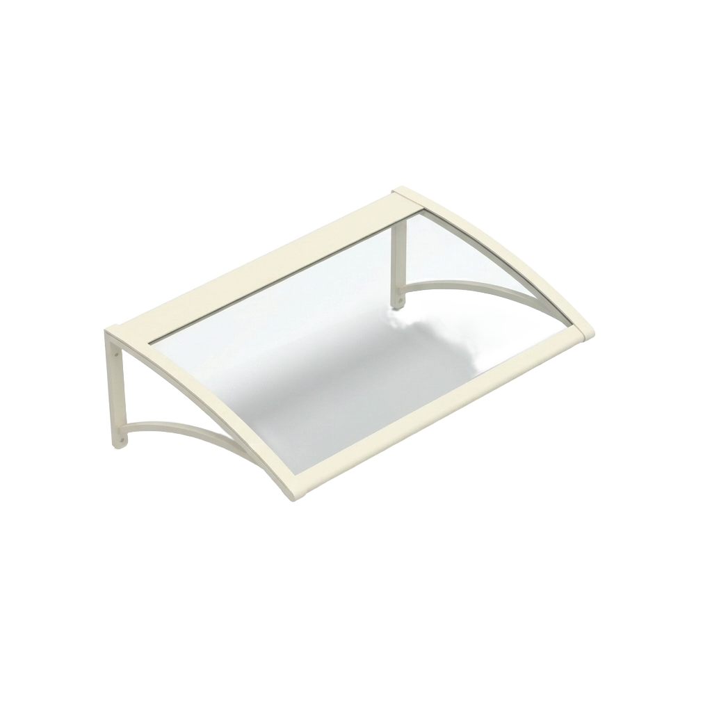
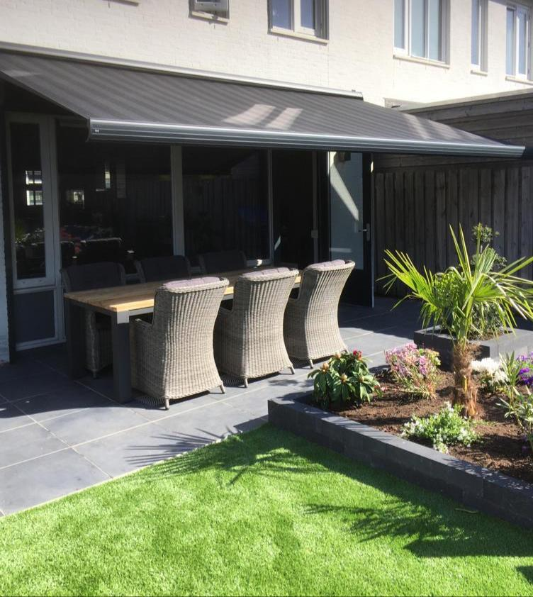
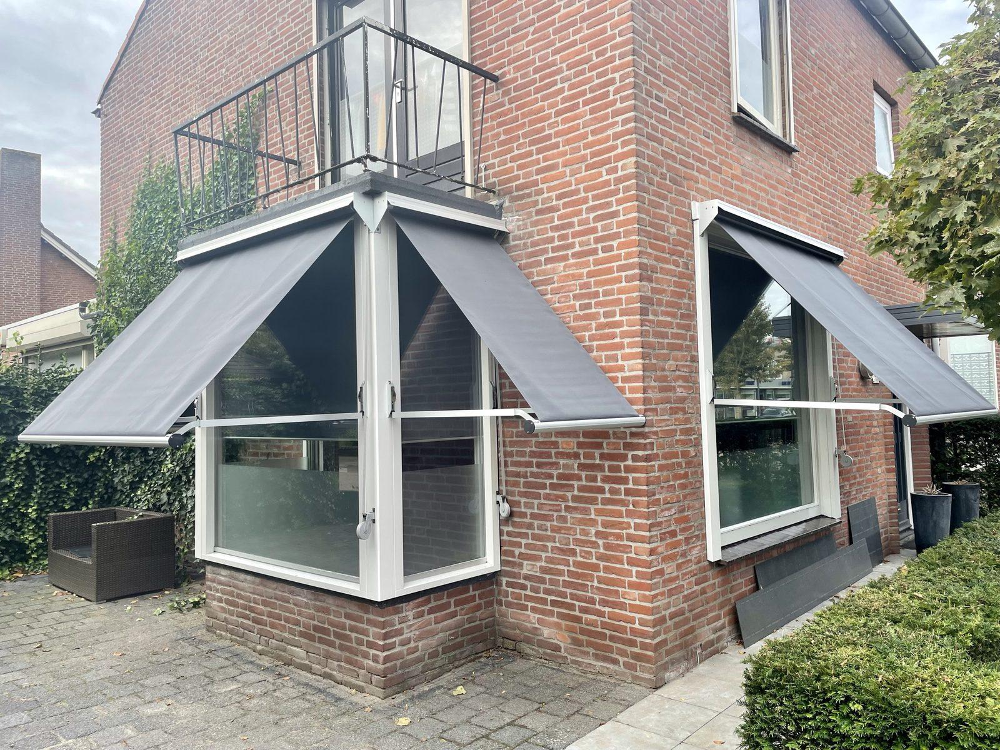

Lucky Zonwering levert en monteert terraszonwering op maat in heel Noord-Brabant: knikarmschermen, uitvalschermen, cassetteluifels, markiezen en deurluifels. Vakwerk sinds 1975, eigen montage vanuit Oss, gratis advies aan huis en een 5,0 op Google uit 124 reviews.
Op een zonnige dag wilt u niets liever dan buiten zitten — maar zonder de felle zon en oplopende hitte. Terraszonwering werpt precies daar schaduw waar u die nodig heeft: boven uw terras, voor de gevel of voor het raam. Zo verlengt u het buitenseizoen, beschermt u uw tuinmeubels tegen verkleuren en houdt u tegelijk uw woonkamer een stuk koeler doordat de zon de ramen niet meer vol raakt.
Als familiebedrijf uit Oss maken wij sinds 1975 maatwerk en plaatsen wij alles met onze eigen monteurs. Of het nu gaat om een breed knikarmscherm voor een groot terras, een sfeervolle markies of een praktische deurluifel: u heeft één aanspreekpunt, van het gratis inmeten tot de nazorg. Hieronder leest u alles over terraszonwering op maat.
Van een breed knikarmscherm voor het hele terras tot een klassieke markies of een compacte deurluifel — alle terraszonwering maken wij op maat, in de kleur en bediening van uw keuze.

Groot bereik met scharnierende armen — ideaal voor brede terrassen, tot ruime uitval.
Offerte aanvragen
Raam- en cabriozonwering die schuin uitvalt en de zon vóór het glas tegenhoudt.
Offerte aanvragen
Doek en techniek verdwijnen volledig in een gesloten cassette — maximale bescherming.
Offerte aanvragen
De klassieke uitvoering met karakteristieke vorm — sfeervolle schaduw met nostalgische uitstraling.
Offerte aanvragen
Compacte luifel boven deur of raam — schaduw en bescherming tegen zon en regen.
Offerte aanvragen
Stel online uw terraszonwering samen in type, kleur en bediening — direct een richtprijs.
Stel samenWelke terraszonwering het beste past, hangt af van uw terras, de oriëntatie op de zon en uw wensen. Tijdens het gratis advies aan huis bekijken we het samen. Dit zijn de belangrijkste vormen:
Het knikarmscherm is de klassieker onder de terrasschermen. Dankzij scharnierende, veerbelaste knikarmen valt het doek ver over uw terras uit, zonder steunpoten die in de weg staan. Daarmee overdekt u eenvoudig een grote zit- of eethoek. Knikarmschermen zijn er voor smalle balkons tot zeer brede terrassen en zijn handmatig of elektrisch te bedienen.
Een uitvalscherm valt schuin naar buiten en houdt de zon tegen vóór die het glas raakt. Het is ideaal als raamzonwering en als cabriozonwering boven openslaande deuren of dakkapellen. Door het doek precies de juiste hoek te geven, blijft het zicht naar buiten behouden terwijl de hitte buiten blijft.
Bij een cassetteluifel verdwijnen het doek, de armen en de motor bij inrollen volledig in een gesloten aluminium cassette. Zo blijft alles beschermd tegen regen, vuil en uv-straling, wat de levensduur verlengt en het onderhoud beperkt. De strakke, gesloten vormgeving past bij elke moderne gevel.
De markies is de nostalgische variant met een karakteristieke, naar voren hellende vorm. Hij werpt sfeervolle schaduw boven ramen en gevels en geeft uw woning een herkenbare, klassieke uitstraling — verkrijgbaar in tal van doekdessins en kleuren.
Een deurluifel is een compacte luifel boven uw voordeur, achterdeur of een los raam. Hij houdt zon en regen weg bij de entree, beschermt het kozijn en geeft een nette afwerking aan uw gevel.
Benieuwd naar de mogelijkheden en een richtprijs? Stel online uw terraszonwering op maat samen of vraag direct een gratis offerte aan.
Terraszonwering van Lucky Zonwering is een investering in comfort én in uw woning. Dit zijn de belangrijkste voordelen:
Het doek onderschept de zon vóór die uw terras en ramen bereikt. Zo weert u uv-straling en hitte, zit u in aangename schaduw en blijft de temperatuur op het terras en in huis een stuk lager.
Met schaduw op afroep zit u ook op hete middagen comfortabel buiten. U gebruikt uw terras vaker en langer, van het vroege voorjaar tot diep in de zomer.
Door de zon buiten te houden, komt er minder warmte uw woonkamer binnen. Uw huis blijft merkbaar koeler en de airco hoeft minder hard te werken — goed voor uw comfort en uw energierekening.
Felle zon laat tuinmeubels, vloeren en meubilair verkleuren. Terraszonwering houdt het uv-licht tegen, zodat uw spullen langer mooi blijven — buiten én binnen.
Benieuwd wat terraszonwering voor uw terras kan betekenen? Vraag een gratis offerte aan of bel ons direct op 0412 - 633 590.
Onze terraszonwering wordt uitgevoerd in onderhoudsarm aluminium in vier tijdloze framekleuren, te combineren met een ruime keuze aan doekkleuren en dessins — passend bij elke gevel en tuin.
U bepaalt zelf hoe comfortabel u uw terraszonwering bedient. Lucky Zonwering adviseert per situatie de slimste oplossing:
Eenvoudig en betrouwbaar: met een slinger rolt u het scherm in en uit. Een onderhoudsarme keuze zonder elektra, ideaal voor kleinere schermen en markiezen.
Met een ingebouwde motor bedient u de zonwering moeiteloos met een afstandsbediening of via een app op uw telefoon. Comfortabel, ook bij brede knikarmschermen.
Een uitvoering op zonne-energie werkt draadloos met een geïntegreerd zonnepaneeltje. Geen kabels trekken, geen stroomverbruik — duurzaam en eenvoudig te plaatsen.
Met een wind- en zonsensor rolt de zonwering automatisch uit zodra de zon doorbreekt en veilig weer in als het gaat waaien. Zo zit u altijd in de schaduw en is uw scherm optimaal beschermd, ook als u niet thuis bent.
Met terraszonwering van Lucky Zonwering creëert u met één druk op de knop een koele, beschutte plek. Een breed knikarmscherm overdekt moeiteloos uw zit- en eethoek, zodat u op de heetste dagen comfortabel buiten blijft zitten.

Doordat de zon de ramen en het terras niet meer vol raakt, blijft uw woonkamer merkbaar koeler. Uw interieur en tuinmeubels worden beschermd tegen verkleuren, en de airco hoeft minder hard te werken.

Van antraciet tot crème: onze knikarmschermen, uitvalschermen en luifels staan bij honderden woningen in Oss en omgeving. Bekijk hieronder een paar van onze projecten en laat u inspireren voor uw eigen terras.


Uitvalscherm Markies
MarkiesTerraszonwering laten plaatsen moet vooral ontzorgen. Daarom regelen wij alles uit één hand, in drie heldere stappen:
Wij komen vrijblijvend bij u langs in Oss of elders in Brabant, bekijken uw terras en gevel en adviseren over type, afmetingen, doek, kleur en bediening. Daarna meten we alles nauwkeurig op.
Uw terraszonwering wordt op maat gemaakt in onderhoudsarm aluminium met het doek van uw keuze. Geen tussenhandel, maar maatwerk uit één hand — met een korte levertijd en een scherpe prijs.
Onze eigen, vaste monteurs plaatsen de zonwering netjes, veilig en vakkundig, stellen alles goed af en laten uw terras schoon achter. Ook na de montage blijven wij bereikbaar voor service en nazorg.
Terraszonwering is vaak het mooist in combinatie met andere oplossingen. Wilt u behalve schaduw op het terras ook de hitte vóór het raam tegenhouden, of het hele jaar buiten zitten? Bekijk dan onze zusterproducten:
Meer weten over de combinatie van koelte in huis en schaduw op het terras? Lees onze pagina over screens & terraszonwering in Brabant.
Ons bedrijf en onze voorraad zitten aan de Ussenstraat 26A in Oss. Doordat we lokaal inmeten én monteren, zijn de lijnen kort: we meten snel in, leveren op maat en blijven bereikbaar voor service. Veel Brabantse woningen — van vrijstaande huizen tot rijwoningen — hebben wij al van terraszonwering voorzien.
Naast Oss plaatsen wij terraszonwering in de omliggende dorpen en steden:
Bekijk gerust onze projecten in en rond Oss of lees waarom klanten voor Lucky kiezen. U bereikt ons op 0412 - 633 590 of via info@luckyzonwering.nl.
Terraszonwering is de verzamelnaam voor zonwering die schaduw werpt op uw terras of voor de gevel, zoals knikarmschermen, uitvalschermen, cassetteluifels, markiezen en deurluifels. Het houdt de zon en hitte buiten, zodat u langer comfortabel buiten zit en het binnen koeler blijft. Lucky Zonwering maakt alle uitvoeringen op maat en monteert ze met eigen monteurs in heel Noord-Brabant.
Een knikarmscherm is een uitvalscherm met scharnierende armen dat ver over uw terras uitsteekt en zo een groot oppervlak overdekt. Een cassetteluifel is een knikarmscherm waarvan het doek, de armen en de techniek bij inrollen volledig in een gesloten cassette verdwijnen, wat extra bescherming tegen weer en vuil biedt en de levensduur verlengt. Lucky Zonwering adviseert u tijdens het gratis advies aan huis welke uitvoering het beste bij uw terras past.
Terraszonwering zoals knikarmschermen en cassetteluifels werpt schaduw bóven of vóór uw terras, terwijl screens strakke doekschermen zijn die verticaal voor het raam lopen en de hitte vóór het glas tegenhouden. Vaak combineren we beide voor optimaal comfort. Lees meer over onze screens en terraszonwering in Brabant op de bijbehorende pagina.
Onze terraszonwering is standaard leverbaar met een frame in antraciet, wit, crème of zwart, gecombineerd met een ruime keuze aan doekkleuren en dessins. Lucky Zonwering adviseert u welke kleurcombinatie het beste past bij uw gevel, kozijnen en tuin.
Ja. Terraszonwering is leverbaar met handmatige slingerbediening of met een elektromotor die u bedient via een afstandsbediening, app of zelfs op zonne-energie. Met een wind- en zonsensor rolt het scherm automatisch uit bij zon en veilig in bij wind, zodat u nergens omkijken naar heeft.
Ja. Door de zon op uw terras en voor de ramen te onderscheppen, komt er minder warmte naar binnen. Daardoor blijft uw woonkamer merkbaar koeler en hoeft de airco minder hard te werken — goed voor uw comfort én uw energierekening.
Ja. Lucky Zonwering meet uw terraszonwering op maat in en plaatst alles met eigen, ervaren monteurs. Zo heeft u één aanspreekpunt van het gratis inmeten tot de montage en de nazorg, en is de zonwering in één keer netjes en goed afgesteld.
De prijs hangt af van het type, de afmetingen, het doek, de kleur en de bediening — een markies of deurluifel is voordeliger dan een breed elektrisch knikarmscherm met sensoren. Lucky Zonwering meet gratis bij u in en geeft daarna een heldere offerte op maat, geheel vrijblijvend.
Weinig. Het aluminium frame is onderhoudsarm en roest niet, en een cassette beschermt het doek tegen vuil en weer als de zonwering is ingerold. Af en toe het doek schoonmaken en bij open uitvoeringen het scherm droog inrollen is doorgaans voldoende voor een lange levensduur.
Ja. Vanuit Oss zijn onze monteurs dagelijks actief in heel Noord-Brabant, waaronder Berghem, Heesch, Geffen, Ravenstein, Uden, Veghel en 's-Hertogenbosch. Lucky Zonwering verzorgt advies, montage en nazorg in uw gemeente.